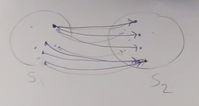
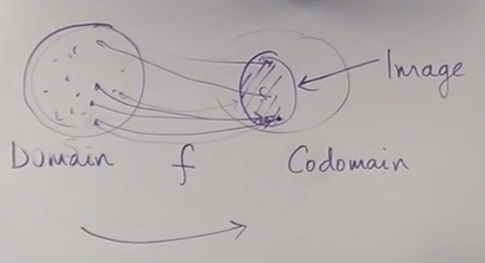
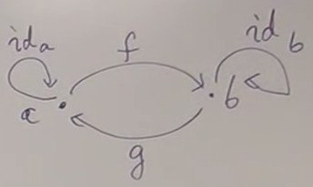
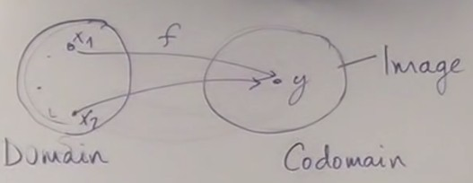
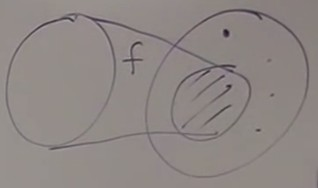
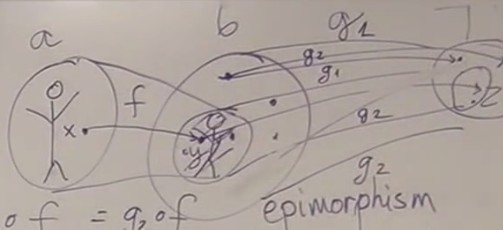

Every time you design a language, you have to provide semantics : what does it mean ? There are two ways of defining semantics.
One is operational semantics by telling how this things execute ; how a statement can be transformed in a simpler one.
And the other is denotational semantics where you map it into an other area that you understand, in particular into mathematics. So you build a mathematical model and you say : this statement or this construct in the language corresponds to this mathematical thing.
For example for types, it is a set of values ; for functions, it is a function between sets.
A function in programming, especially in imperative languages, is not exactly the same as a function in mathematics.
A function between sets is what we call a pure function and a total function in programming.
A total function is defined for all its arguments, and its argument are taken from some type ; so a function for integers has to be defined for all integers.
A function is pure if you can memoize it, turn it into a lookup table, because for each value of an argument, it should return a particular value. And you can remember this value. You call this function once, it evaluates its argument, you store the answer in a table and the next time you call it you can do a lookup in the table. For finite sets (like booleans or characters), functions are easy to tabulate (functions like isAlpha(), isPrintable()) ; for infinte sets, like strings or integers, we can't tabulate them only because of finite resources - but we could with infinite resources. Functions like getCharAt() can't be memoized.
In practice, we need side effects, but this can be described on top of pure functions.
If we get to the bottom, the simplest, we get to pure functions, and we can build more complex things on top of it using composability.
Functions
Functions are defined in mathematics as a special kind of relation.
We place ourselves in set theory, not in Set category (because in category theory, we don't know about the elements).
So a relation is a subset of pairs of elements. The set of all pairs form a .
Any substet of this cartesian product is a relation by definition. Without any other requirement.

A relation doesn't have to be symetric.
An element of S1 can be mapped to several elements of S2.
Several elements of S1 can be mapped to the same element of S2.
Functions have direction.
We have a relation between S1 and S2,
but we have a function from S1 to S2.
One argument of a function cannot be mapped into several elements.
But it's ok for several arguments of a function to be mapped to the same value.
If we consider total functions, all the elements of S1 must be mapped to elements of S2. But not all elements of S2 need to be mapped by the function

S1 is called the domain of the function and S2 the codomain The image of the function is the subset of S2 that is mapped by the function.
Functions have directionality.
This is important because we find directionality in other kinds of mapping in category theory : functors (mapping between categories), natural transformations (mappings between functors) have the same kind of directionality.
The simplest way to understand this directionality is asking : is the function invertible ? If a function f permits to go from a to b, is there a function that permits to go from b to a ? Generally it is not.
Isomorphisms
If we use Haskell notation :
f :: a → b (a type of function which goes from set a to set b)
f is invertible if there exists a function g :: b → a such as
g o f = Id
It means that if you have an element x in a, you map it to an element y in b : f(x) = y And then if you map y to an element of a with g, you necessarily come back to x : g(y) = x You come back to the same element for any x in the domain of f.
The same applies in the other direction :
f o g = Id
A function that is invertible is symetric ; it is called an isomorphism.
This property can be translated to categorical language :

g o f = Idaf o g = Idb
We can now express this property without talking about elements.
And this property is defined for any category, not only category of sets.
The property is expressed in terms of composition and identity, nothing else.
Isomorphisms are great, they permit to identify two sets, there is a one to one mapping between two sets.
The two sets can be considered as identical for certain purposes ; they are not really identical, only isomorphic, but we have an identification between these two sets.
For finite sets, the identification is straight ; for infinite sets, it's a bit more complicate.
There are two reasons for a function not to be an isomorphism :
If a function collapses several elements of a to the same element of b.

For example function isEven(), which asociates a boolean to an integer.
This corresponds to the process of abstraction : we loose information about which element generated y, we leave the details to keep only the information that interests us.
If the image of the function doesn't fill the whole codomain.

Corresponds to the process of modeling : I'm recognizing the pattern of a inside b.
If we think of a function as something directional, as a process which takes place in time, a function that is not invertible increases entropy. We make a transformation, and can't get back to the initial state.
Mathematicians have names for these properties ; the definitions are converse :
If a function does not collapse, then it is called injective ; the function is a injection If f(x1) = f(x2) then x1 = x2
If the image fills the whole codomain (the image is equal to the codomain), then it is called surjective ; the function is a surjection.
∀ y ∈ b, ∃ x ∈ a | y = f(x)
(for all y in b, there exists an x such as y = f(x))
If a function is both injective and surjective, then it is a bijection, it is invertible.
Epimorphism, monomorphisms
We have defined the notions of injection and surjection in set theory, using the elements of sets.
But how can we do that in the Set category ? We can't use the elements of sets anymore, sets are seen as objects without structure.
We must use a general way to work in category theory : define the property of an object using the relations of this object with the other objects of the category.
In the Set category, a surjection is called an epimorphism (surjective is called epic), and an injection is called a monomorphism (injective is called monic).
But these are defined for any category, not only sets, so they are more general notions.
Epimorphism
So how to define an epimorphism without talking about elements ? We use other functions and composition.

If we have a function f from a to b which is not surjective, it means that there are elements of b that are not in the image of f.
If we take a function g :: b → c whose domain is b, it will map elements of b that are inside and outside the image of f.
But if we compose g with f, g o f will only act on the image of f, and do not deal with the elements outside the image of f.
If we take two such functions g1 and g2 that differ only outside the image of f, the compositions g1 o f and g2 o f will be the same.
So we can have g1 o f = g2 o f with g1 different from g2.
The converse of this logic permits to define an epimorphism :
f is an epimorphism if for all set c, for all functions g1 and g2,
g1 o f = g2 o f implies that g1 = g2
In the Set category, this corresponds to surjection.
But this is defined without any references to elements of the sets, and applies to any category.
Notice that we use "for all" quantifiers : we must look at all sets c, and all functions g from b to c to define the property of f.
A way to look at this is that we can cancel f : g1o f = g2o f